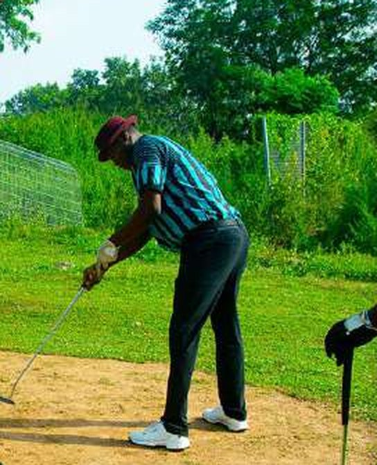
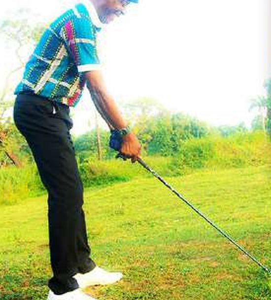
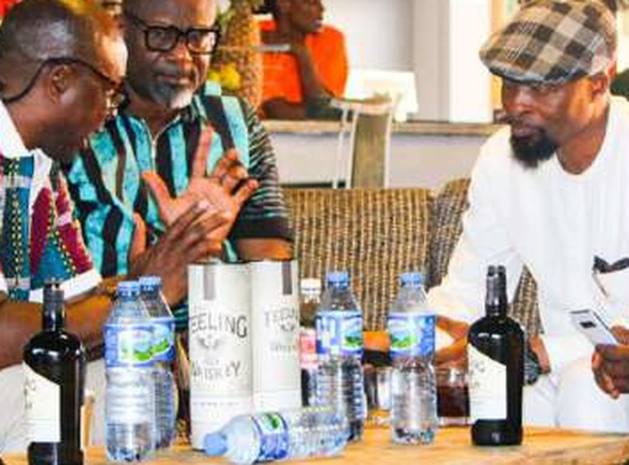
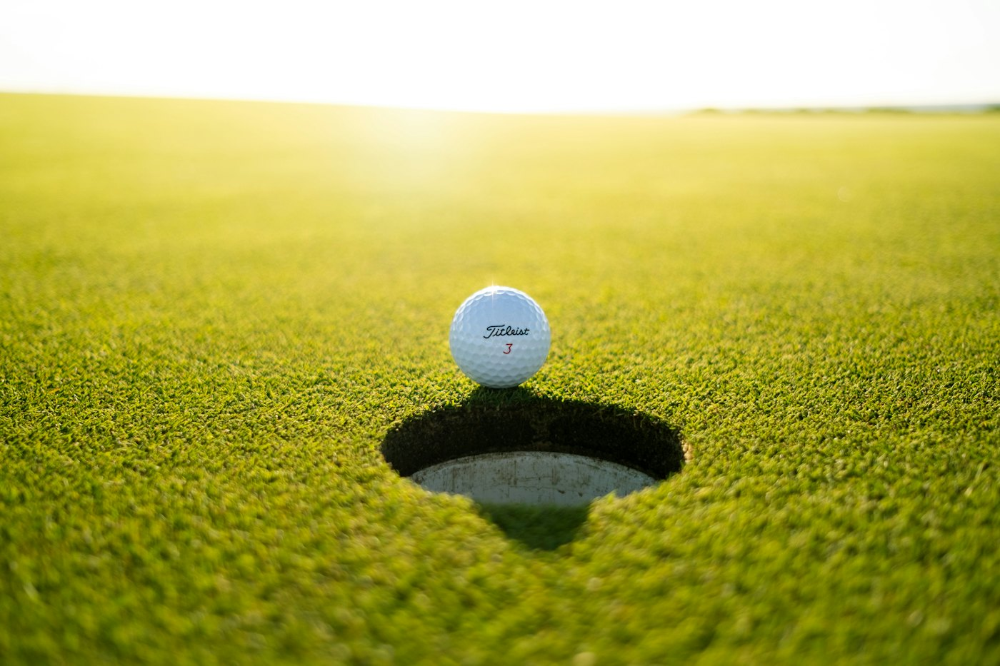
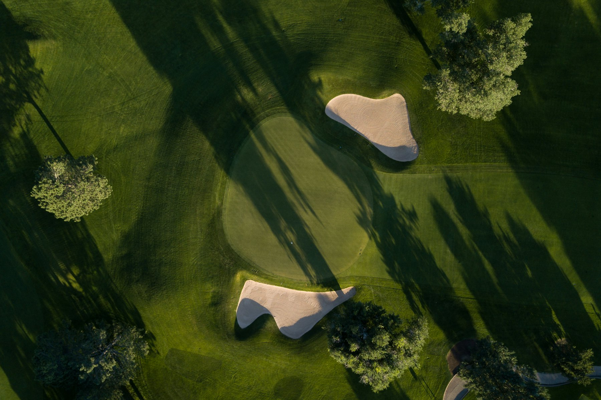

The Course
Competitive tournament days, social rounds and practice sessions on the club's home course in the heart of the FCT.
Where the greens meet
Abuja Metropolitan Golf Club is the capital's meeting point for exceptional golf, enduring fellowship and the policy conversations that shape Nigeria.
Ideas · Partnership
· Impact
What defines the club
Based at the Top Golf / Abuja Metropolitan Golf Club Course within the Moshood Abiola National Stadium Complex, AMGC brings together golfers, captains of industry, public officials and diplomats in a community where every round can open a conversation that matters.

Competitive tournament days, social rounds and practice sessions on the club's home course in the heart of the FCT.

A fellowship of members, sponsors and guests — from first-time golfers to seasoned low handicappers.

Our intellectual arm convenes Nigeria's decision-makers for candid, constructive policy interrogation.
The Abuja Leadership Dialogue is the premier intellectual and policy forum of Abuja Metropolitan Golf Club — bridging public-sector reform and private capital deployment in the Federal Capital Territory.
Inaugural Abuja Leadership Dialogue 2026
An exclusive convergence of governance, capital and enterprise. Nigeria's foremost captains of industry, cabinet officials, legal luminaries, foreign diplomats and sports administrators gather for a black-tie dinner and policy interrogation in Abuja.
Countdown to the Gala · 16 Dec 2026, 18:00 WAT
Part I · 10 December 2026
Hosted at Abuja Metropolitan Golf Club, this special tournament celebrates the launch of the Abuja Leadership Dialogue. Corporate sponsors, club members, diplomats and senior public officials compete in a prestigious pre-dialogue tournament.
Part II · 16 December 2026
A three-course gourmet dinner, the NSC Director-General's keynote, a 55-minute journalistic interrogation, an open-floor dialogue with all 100 guests, stand-up comedy and live jazz / Afro-classical entertainment.
Gala evening · 16 December 2026
Four hours, three courses and one unhurried conversation about the future of Nigerian sport and enterprise.

Arrival of 100 VVIP guests; pre-dinner cocktails with a chamber string / jazz ensemble.
National Anthem, welcome address by the Convener and introduction of dignitaries.
Service of appetiser; keynote address by the Director-General, NSC.
Service of entrée; 55-minute interrogation by top journalists led by Godwin Dudu-Orumen.
Service of dessert; 35-minute moderated floor Q&A and contributions from the 100 guests.
Vote of thanks, high-taste stand-up comedy and a live Afro-classical band performance.
Policy pillars of the inaugural interrogation
Under the chair of Godwin Dudu-Orumen, Esq., a four-member media panel drawn from Nigeria's foremost print and broadcast outlets will examine three core imperatives.
Commercial concession frameworks, long-term lease structures and facility-management standards for national stadium complexes.
Fiscal and tax incentives for corporate sports sponsorship and legal safeguards for Public-Private Partnerships (PPPs).
Restructuring sports federations for commercial viability and integrating community clubs with national development pathways.
Keynote Speaker
Director-General of the National Sports Commission since November 2024. Founder of the Lagos Marathon and a former Ogun State Commissioner for Sports.
Lead Interrogator
Sports lawyer and broadcast veteran, leading a four-member consortium of top national journalists through the 55-minute interrogation.
Chairman of the Occasion
The Chairman for the inaugural Gala & Dialogue will be unveiled by the Steering Committee.
Life at the club
From tee-off to trophy presentation, AMGC days are as much about the people as the play.

Marketing & partnership prospectus
With attendance intentionally restricted to 100 top-echelon leaders, partners gain direct, unhurried access to decision-makers across banking, telecommunications, energy, infrastructure, legal practice and federal administration.
Table-side and reception engagement with ministers, heads of agencies, ambassadors and corporate chairs across both the Golf Kitty and the Gala.
Live television feed, national press coverage by the media consortium, red-carpet interviews and commemorative print dossiers.
Integrated visibility spanning the celebratory golf tournament at AMGC and the black-tie gala in Abuja.
Exclusive · 1 slot
₦50,000,000
2 slots
₦25,000,000
5 slots
₦5,000,000
20 seats
₦2,000,000
₦20,000,000
Title branding of the Celebratory Golf Kitty at AMGC, tee-box signage, awards cocktail branding and 4 Gala dinner seats.
₦30,000,000
Branding on live television broadcast lower-thirds, the media interrogation backdrop and press kits, plus 4 Gala dinner seats.
₦5,000,000 per slot
Branding of the 18:00 reception lounge, bespoke printed dinner & wine menus across all 10 tables, and 2 Gala dinner seats.
| Benefit / entitlement | Headline ₦50M | Associate ₦25M · 2 slots | VIP Table ₦5M |
|---|---|---|---|
| Co-naming rights (Gala & Golf Kitty) | Included | — | — |
| Executive opening goodwill remarks | 5 minutes | — | — |
| Stage, podium & golf course branding | Primary | Secondary | Programme listing |
| Gala dinner VVIP seating | 10 seats (1 table) | 10 seats (1 table) | 10 seats (1 table) |
| Pre-event VVIP Green Room access | Yes (4 executives) | Yes (2 executives) | — |
| Golf Kitty playing slots | 4 players (1 team) | 2 players | 1 player |
| Corporate video on LED screens | 60 seconds | 30 seconds | — |
Reservations & secretariat
Steering Committee, Abuja Leadership Dialogue — Top Golf / Abuja Metropolitan Golf Club Course, Abuja.